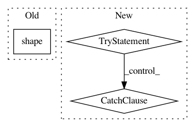

5b2766aae94c0615aef2c8d6ac178428e6d28745,pymc/database/mysql.py,Trace,tally,#Trace#Any#,46
Before Change
self.db.cur.execute("INSERT INTO %s values %s" % (self.obj.name, values[:-1]))
// Re-initialize trace
self._trace = zeros(shape(self._trace), self._trace.dtype)
def truncate(self, index):
After Change
except TypeError:
pass
try:
// I changed str(x) to "%f"%x to solve a bug appearing due to
// locale settings. In french for instance, str prints a comma
// instead of a colon to indicate the decimal, which confuses
// the database into thinking that there are more values than there
// is. A better solution would be to use another delimiter than the
// comma. -DH
valstring = ", ".join(["%f"%x for x in self._obj.value])
except:
valstring = str(self._obj.value)
// Add value to database
self.db.cur.execute("INSERT INTO %s (trace, %s) values (%s, %s)" % (self.name, " ,".join(["v%s" % (x+1) for x in range(size)]), self.current_trace, valstring))
class Database(pickle.Database):
In pattern: SUPERPATTERN
Frequency: 3
Non-data size: 3
Instances
Project Name: pymc-devs/pymc3
Commit Name: 5b2766aae94c0615aef2c8d6ac178428e6d28745
Time: 2008-07-20
Author: fonnesbeck@15d7aa0b-6f1a-0410-991a-d59f85d14984
File Name: pymc/database/mysql.py
Class Name: Trace
Method Name: tally
Project Name: scipy/scipy
Commit Name: dd2c0904a4ba0bf58b0f067a1bbbb7ddb49ba1b8
Time: 2020-02-29
Author: j.m.vleeshouwers@tue.nl
File Name: scipy/optimize/_linprog_util.py
Class Name:
Method Name: _clean_inputs
Project Name: asyml/texar
Commit Name: 74c062162194fa2d89e85f2a99bf4c71e66d5654
Time: 2018-04-02
Author: zichaoy@cs.cmu.edu
File Name: examples/tsf/tsf_trainer.py
Class Name: TSFTrainer
Method Name: eval_model